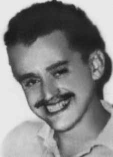

Rui
Osvaldo
Aguiar
Pfútzenreuter
CIRCUNSTÂNCIAS DA MORTE
Rui foi preso por agentes do DOI-CODI do II Exército, em São Paulo, no dia 14 de abril de 1972, e morto no dia seguinte, após torturas, quando se encontrava sob responsabilidade do Estado. Os relatórios do Ministério da Marinha e do Ministério da Aeronáutica, entregues ao ministro da Justiça em 1993, registram a versão de que Rui teria sido morto por agentes de segurança em tiroteio, após sacar uma arma. De imediato, teria sido levado ferido, ainda com vida, para o hospital, falecendo no caminho. Essa versão foi logo questionada, já que Rui destacava-se por ser crítico à luta armada. O PORT, inclusive, também adotava essa linha de posicionamento em relação à esquerda revolucionária. Na carta que escreveu ao presidente Emílio Garrastazu Médici, seu pai descreveu sua saga na busca por informações sobre o paradeiro do filho. Registra que, tanto na OBAN quanto no DOPS/SP, sempre lhe negaram qualquer informação sobre Rui. Osvaldo Pfützenreuter só teve notícias quando procurou o Instituto Médico-Legal de São Paulo (IML/SP), onde foi comunicado de que seu filho já estava morto e havia sido enterrado no cemitério Dom Bosco, em Perus, São Paulo (SP). A carta feita por Osvaldo Pfützenreuter, pai de Rui, circulou em vários países e foi entregue aos líderes da Arena e do MDB, ao CDDPH e aos organismos de Direitos Humanos da ONU e da OEA. E se tomo a iniciativa de denunciar e usar todos os canais para castigar os responsáveis e conseguir dar a meu filho um enterro digno em sua terra natal é para que amanhã outros pais não tenham que, amargurados e silenciosamente, enterrar seus filhos, com se fosse possível enterrar junto a seus corpos, suas ideias, suas lembranças e a força renovadora de sua juventude. Uma grande lição a vida me ensinou, e meu filho mias do que ninguém, a lição da solidariedade humana. Embora Rui Pfützenreuter estivesse identificado na requisição dos exames necroscópicos ao IML/SP, de 15 de abril de 1972, foi enterrado como indigente no cemitério de Perus, em uma clara tentativa de ocultar o corpo e as provas das circunstâncias da morte. Quando Osvaldo Pfützenreuter dirigiu-se ao DOPS para conseguir retirar a certidão de óbito do filho e a autorização para exumar e sepultar o corpo em sua cidade, recebeu de um homem chamado Dr. Bueno uma foto do corpo de Rui. O pai registra que os hematomas no corpo do filho eram visíveis mesmo na foto em que aparecia apenas a parte de cima do corpo. O exame de necropsia foi feito apenas no dia 26 de abril de 1972. Na solicitação de exame necroscópico, consta a letra “T”, de “terrorista”, prática usada pelos órgãos da repressão para identificar os mortos por motivos políticos. O exame foi assinado por Isaac Abramovitc e Antonio Valentini e descreve perfurações de tiros no corpo da vítima, embora sem registro de hematomas ou ferimentos de outra natureza que pudessem indicar tortura. Conforme o Dossiê Ditadura: Mortos e Desaparecidos Políticos no Brasil (1964-1985), foram abertos processos disciplinares no Conselho Regional de Medicina do Estado de São Paulo (Cremesp) contra os legistas acusados de falsificação de laudos na ditadura. O laudo sobre a morte de Rui foi um dos analisados nessa ocasião. No parecer do médico legista Antenor Chicarino, a lesão descrita no laudo necroscópico de Rui Pfützenreuter não poderia matar, de imediato, uma pessoa. O legista ressaltou ainda a péssima qualidade do exame que, inclusive, ignorou ferimentos visíveis na fotografia, entre eles uma equimose no pescoço compatível com estrangulamento. Outras provas que refutam a versão de morte em tiroteio foram colhidas com o decorrer do tempo, como as denúncias de morte sob tortura nas declarações de Ayberê Ferreira de Sá e de Almério Melquíades de Araújo, prestadas perante a Justiça Militar. Mesmo após identificar o lugar em que fora enterrado no cemitério Dom Bosco, a família de Rui ainda enfrentou grandes dificuldades para trasladar o seu corpo. Pelos esforços de seu pai, Osvaldo, ainda durante a vigência da ditadura militar, ele foi sepultado em Orleans, Santa Catarina, no jazigo da família. Rui Osvaldo Aguiar Pfützenreuter foi preso no DOI/CODI do II Exército, em São Paulo onde morreu após as torturas sofridas.
Rui was arrested by DOI-CODI agents from the II Army, in São Paulo, on April 14, 1972, and killed the following day, after torture, when he was under the responsibility of the State. The reports from the Ministry of the Navy and the Ministry of Aeronautics, delivered to the Minister of Justice in 1993, record the version that Rui had been killed by security agents in a shootout, after pulling out a gun. He was immediately taken injured, still alive, to the hospital, dying on the way. This version was soon questioned, as Rui stood out for being critical of the armed struggle. PORT, in fact, also adopted this line of position in relation to the revolutionary left. In the letter he wrote to President Emílio Garrastazu Médici, his father described his saga in search of information about his son's whereabouts. He notes that both OBAN and DOPS/SP always denied him any information about Rui. Osvaldo Pfützenreuter only found out when he contacted the São Paulo Medical-Legal Institute (IML/SP), where he was informed that his son was already dead and had been buried in the Dom Bosco cemetery, in Perus, São Paulo (SP). The letter written by Osvaldo Pfützenreuter, Rui's father, was circulated in several countries and was delivered to the leaders of Arena and MDB, the CDDPH and the UN and OAS Human Rights organizations. And if I take the initiative to denounce and use all channels to punish those responsible and manage to give my son a dignified burial in his homeland, it is so that tomorrow other parents will not have to, bitterly and silently, bury their children, as if it were possible to bury alongside their bodies, their ideas, their memories and the renewing strength of their youth. Life has taught me a great lesson, and my son more than anyone else, the lesson of human solidarity. Although Rui Pfützenreuter was identified in the request for necroscopic examinations to the IML/SP, dated April 15, 1972, he was buried as a pauper in the Perus cemetery, in a clear attempt to hide the body and evidence of the circumstances of death. When Osvaldo Pfützenreuter went to the DOPS to obtain his son's death certificate and authorization to exhume and bury the body in his city, he received a photo of Rui's body from a man called Dr. Bueno. The father records that the bruises on his son's body were visible even in the photo in which only the upper part of the body appeared. The autopsy examination was only carried out on April 26, 1972. The request for a necropsy examination contains the letter “T”, for “terrorist”, a practice used by repression bodies to identify those killed for political reasons. The examination was signed by Isaac Abramovitc and Antonio Valentini and describes gunshot wounds on the victim's body, although there was no record of bruises or injuries of any other nature that could indicate torture. According to the Dictatorship Dossier: Political Deaths and Disappearances in Brazil (1964-1985), disciplinary proceedings were opened at the Regional Council of Medicine of the State of São Paulo (Cremesp) against the coroners accused of falsifying reports during the dictatorship. The report on Rui's death was one of those analyzed on that occasion. In the opinion of coroner Antenor Chicarino, the injury described in Rui Pfützenreuter's autopsy report could not immediately kill a person. The coroner also highlighted the poor quality of the examination, which even ignored injuries visible in the photograph, including a bruise on the neck compatible with strangulation. Other evidence that refutes the version of death in a shooting was collected over time, such as the allegations of death under torture in the statements of Ayberê Ferreira de Sá and Almério Melquíades de Araújo, given before the Military Court. Even after identifying the place where he was buried in the Dom Bosco cemetery, Rui's family still faced great difficulties in moving his body. Through the efforts of his father, Osvaldo, during the military dictatorship, he was buried in Orleans, Santa Catarina, in the family tomb. Rui Osvaldo Aguiar Pfützenreuter was arrested at the DOI/CODI of the II Army, in São Paulo, where he died after the torture suffered.
Rui fue detenido por agentes del DOI-CODI del II Ejército, en São Paulo, el 14 de abril de 1972, y asesinado al día siguiente, tras tortura, cuando se encontraba bajo responsabilidad del Estado. Los informes del Ministerio de Marina y del Ministerio de Aeronáutica, entregados al Ministro de Justicia en 1993, recogen la versión de que Rui había sido asesinado por agentes de seguridad en un tiroteo, tras sacar un arma. Inmediatamente fue trasladado herido, todavía con vida, al hospital, falleciendo en el camino. Esta versión pronto fue cuestionada, pues Rui se destacó por ser crítico con la lucha armada. De hecho, PORT también adoptó esta línea de posición en relación con la izquierda revolucionaria. En la carta que escribió al presidente Emílio Garrastazu Médici, su padre describió su saga en busca de información sobre el paradero de su hijo. Señala que tanto OBAN como DOPS/SP siempre le negaron cualquier información sobre Rui. Osvaldo Pfützenreuter sólo se enteró cuando contactó al Instituto Médico Legal de São Paulo (IML/SP), donde le informaron que su hijo ya estaba muerto y había sido enterrado en el cementerio Dom Bosco, en Perus, São Paulo (SP). La carta escrita por Osvaldo Pfützenreuter, padre de Rui, circuló en varios países y fue entregada a los dirigentes de Arena y MDB, la CDDPH y los organismos de Derechos Humanos de la ONU y la OEA. Y si tomo la iniciativa de denunciar y utilizar todos los canales para castigar a los responsables y lograr dar a mi hijo una sepultura digna en su patria, es para que mañana otros padres no tengan que enterrar, amarga y silenciosamente, a sus hijos, como si fuera posible enterrar junto a sus cuerpos, sus ideas, sus recuerdos y la fuerza renovadora de su juventud. La vida me ha dado una gran lección, y mi hijo más que nadie, la lección de la solidaridad humana. Aunque Rui Pfützenreuter fue identificado en la solicitud de exámenes necroscópicos al IML/SP, del 15 de abril de 1972, fue enterrado como indigente en el cementerio de Perus, en un claro intento de ocultar el cuerpo y las pruebas de las circunstancias de la muerte. Cuando Osvaldo Pfützenreuter acudió al DOPS para obtener el certificado de defunción de su hijo y la autorización para exhumar y enterrar el cuerpo en su ciudad, recibió una foto del cuerpo de Rui de un hombre llamado Dr. Bueno. El padre registra que los moretones en el cuerpo de su hijo eran visibles incluso en la foto en la que solo aparecía la parte superior del cuerpo. El examen de autopsia recién se realizó el 26 de abril de 1972. La solicitud de examen de necropsia contiene la letra “T”, de “terrorista”, práctica utilizada por los órganos de represión para identificar a los asesinados por motivos políticos. El examen fue firmado por Isaac Abramovitc y Antonio Valentini y describe heridas de bala en el cuerpo de la víctima, aunque no constaron contusiones ni lesiones de cualquier otra naturaleza que pudieran indicar tortura. Según el Dossier Dictadura: Muertes y Desapariciones Políticas en Brasil (1964-1985), se abrió un proceso disciplinario en el Consejo Regional de Medicina del Estado de São Paulo (Cremesp) contra los médicos forenses acusados de falsificar informes durante la dictadura. El informe sobre la muerte de Rui fue uno de los analizados en aquella ocasión. Según el forense Antenor Chicarino, la lesión descrita en el informe de la autopsia de Rui Pfützenreuter no podía provocar la muerte inmediata de una persona. El forense también destacó la mala calidad del examen, que incluso ignoró las lesiones visibles en la fotografía, incluido un hematoma en el cuello compatible con estrangulamiento. Otras pruebas que refutan la versión de muerte en tiroteo fueron recopiladas con el tiempo, como las denuncias de muerte bajo tortura en las declaraciones de Ayberê Ferreira de Sá y Almério Melquíades de Araújo, rendidas ante el Tribunal Militar. Incluso después de identificar el lugar donde fue enterrado en el cementerio Dom Bosco, la familia de Rui todavía enfrentó grandes dificultades para trasladar su cuerpo. Por gestiones de su padre, Osvaldo, durante la dictadura militar, fue enterrado en Orleans, Santa Catarina, en la tumba familiar. Rui Osvaldo Aguiar Pfützenreuter fue detenido en el DOI/CODI del II Ejército, en São Paulo, donde murió tras las torturas sufridas.